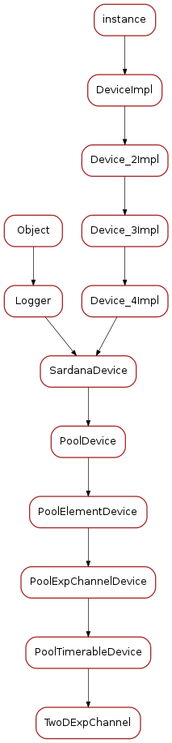

TwoDExpChannel¶
Classes
TwoDExpChannel¶
TwoDExpChannelClass¶

-
class
TwoDExpChannelClass(name)[source]¶ Bases:
sardana.tango.pool.PoolDevice.PoolTimerableDeviceClass-
class_property_list= {}¶
-
device_property_list= {'Id': [tango._tango.CmdArgType.DevLong64, 'Internal ID', 0], 'Instrument_id': [tango._tango.CmdArgType.DevLong64, 'Controller ID', [0]], 'Ctrl_id': [tango._tango.CmdArgType.DevLong64, 'Controller ID', [0]], 'Axis': [tango._tango.CmdArgType.DevLong64, 'Axis in the controller', [0]], 'Force_HW_Read': [tango._tango.CmdArgType.DevBoolean, 'Force a hardware read of value even when in operation (motion/acquisition', False]}¶
-
cmd_list= {'Abort': [[tango._tango.CmdArgType.DevVoid, ''], [tango._tango.CmdArgType.DevVoid, '']], 'Start': [[tango._tango.CmdArgType.DevVoid, ''], [tango._tango.CmdArgType.DevVoid, '']], 'Restore': [[tango._tango.CmdArgType.DevVoid, ''], [tango._tango.CmdArgType.DevVoid, '']], 'Stop': [[tango._tango.CmdArgType.DevVoid, ''], [tango._tango.CmdArgType.DevVoid, '']]}¶
-
attr_list= {'SimulationMode': [[tango._tango.CmdArgType.DevBoolean, tango._tango.AttrDataFormat.SCALAR, tango._tango.AttrWriteType.READ_WRITE], {'label': 'Simulation mode'}], 'Instrument': [[tango._tango.CmdArgType.DevString, tango._tango.AttrDataFormat.SCALAR, tango._tango.AttrWriteType.READ_WRITE], {'Display level': tango._tango.DispLevel.EXPERT, 'label': 'Instrument'}], 'Timer': [[tango._tango.CmdArgType.DevString, tango._tango.AttrDataFormat.SCALAR, tango._tango.AttrWriteType.READ_WRITE], {'Memorized': 'true'}], 'IntegrationTime': [[tango._tango.CmdArgType.DevDouble, tango._tango.AttrDataFormat.SCALAR, tango._tango.AttrWriteType.READ_WRITE]], 'DataSource': [[tango._tango.CmdArgType.DevString, tango._tango.AttrDataFormat.SCALAR, tango._tango.AttrWriteType.READ]]}¶
-
standard_attr_list= {'ValueBuffer': [[tango._tango.CmdArgType.DevEncoded, tango._tango.AttrDataFormat.SCALAR, tango._tango.AttrWriteType.READ]], 'Value': [[tango._tango.CmdArgType.DevVoid, tango._tango.AttrDataFormat.IMAGE, tango._tango.AttrWriteType.READ, 4096, 4096], {'abs_change': '1.0'}], 'ValueRefBuffer': [[tango._tango.CmdArgType.DevEncoded, tango._tango.AttrDataFormat.SCALAR, tango._tango.AttrWriteType.READ]]}¶
-